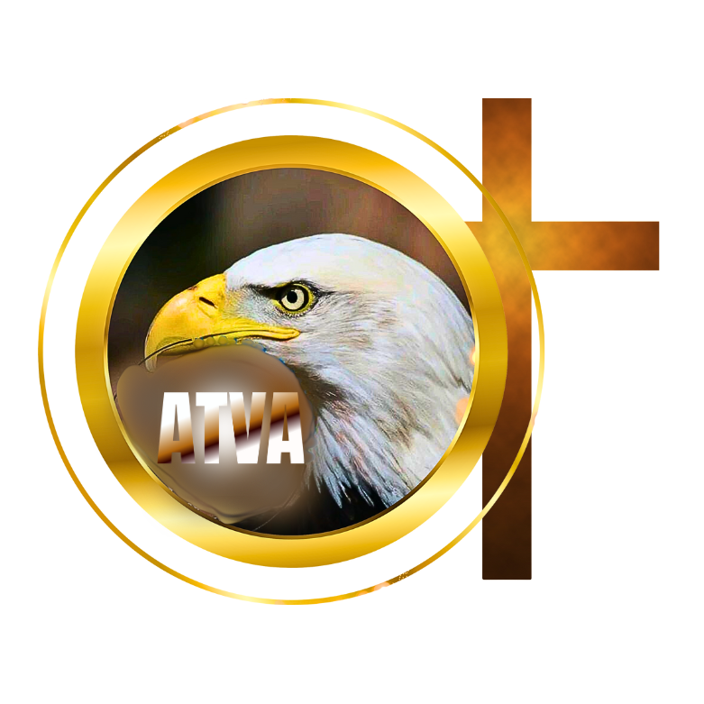
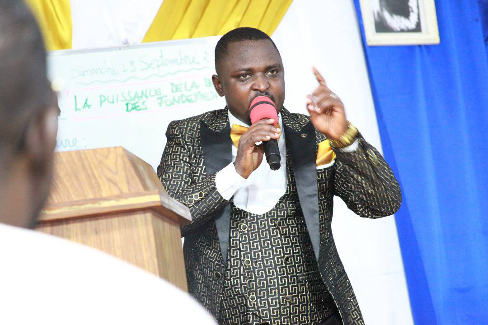
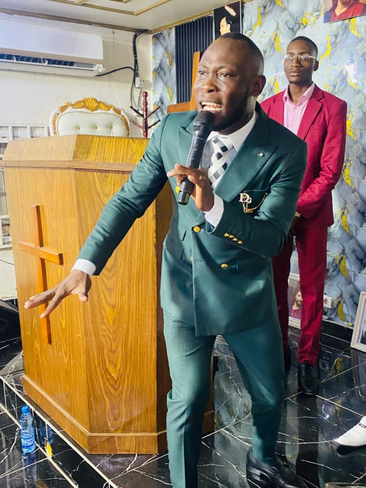
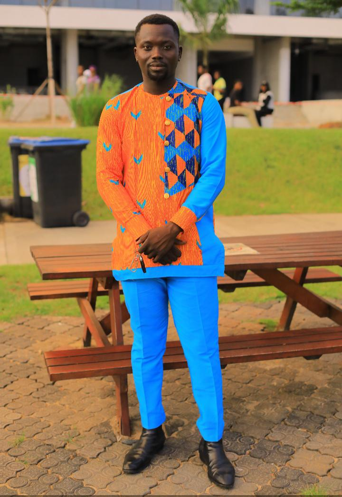

Une rencontre spirituelle exceptionnelle placée sous la conduite du Saint-Esprit.
Bien-aimé(e), c'est avec une immense joie que nous vous invitons à participer à notre Mini Campagne d'Évangélisation organisée par l'Alliance Tabernacle Vision de l'Aigle.
Découvrir le temps de Dieu pour votre vie et comprendre le message qu'Il vous adresse aujourd'hui.

Hôte Principal
Orateur Invité
Orateur Invité

Orateur Invité

Orateur Invité
📅 Du Mercredi 24 au Samedi 27 Juin 2026 — 17H30 à 19H30
📅 Dimanche 28 Juin 2026 — 09H30 à 12H30
📍 Belleville 3, au pavé chez le chef
Venez nombreux